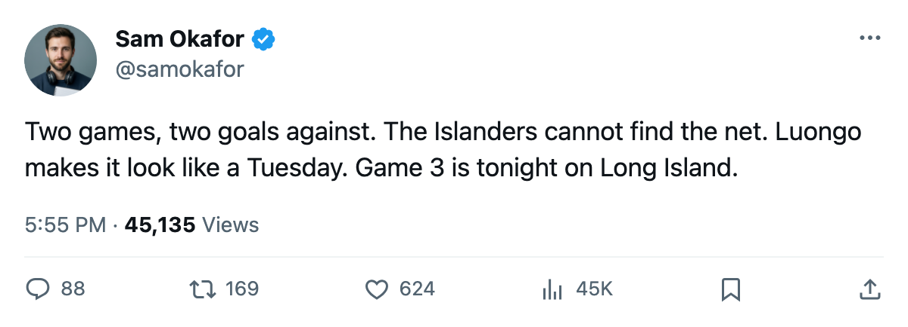
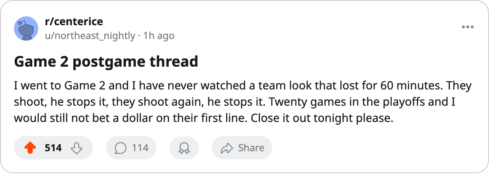

Series 2-0: Luongo's 1.01 and a 2-goal Islanders offense head into Game 3
Toronto carries a two-goal margin in each game and a goaltender who has not been pulled once, on the road tonight for the third meeting
 Sam OkaforLeafs beat reporter · Queen City Telegram
Sam OkaforLeafs beat reporter · Queen City Telegram
The  Toronto Maple Leafs Maple Leafs lead
Toronto Maple Leafs Maple Leafs lead  New York Islanders 2-0 in this first-round series and take a 1.01 GAA to Long Island tonight for Game 3.
New York Islanders 2-0 in this first-round series and take a 1.01 GAA to Long Island tonight for Game 3.  Roberto Luongo97 has started both games and posted a .971 save percentage.
Roberto Luongo97 has started both games and posted a .971 save percentage.
New York has scored 2 goals in two games.  Rick DiPietro88 faces a .841 save percentage in the series after the first two meetings. The Islanders finished 30-38-4, 84 points, with 243 goals for through the regular season. In the series, that production has evaporated:
Rick DiPietro88 faces a .841 save percentage in the series after the first two meetings. The Islanders finished 30-38-4, 84 points, with 243 goals for through the regular season. In the series, that production has evaporated:  Chris Simon72's goal in Game 1 and
Chris Simon72's goal in Game 1 and  Adrian Aucoin79's in Game 2 are the only tallies.
Adrian Aucoin79's in Game 2 are the only tallies.
Toronto's scoring in this series has spread across four names.  Marian Gaborik99 carries 2 goals and 2 assists.
Marian Gaborik99 carries 2 goals and 2 assists.  Gary Roberts87 has 4 assists in 2 games.
Gary Roberts87 has 4 assists in 2 games.  Mats Sundin92 sits at 2 goals and 1 assist. Petr Chlup87 has 1 goal and 1 assist across the two games.
Mats Sundin92 sits at 2 goals and 1 assist. Petr Chlup87 has 1 goal and 1 assist across the two games.
The regular season produced a 4-1-1 record for Toronto against New York, with an 18-11 goal differential. Two of those seven games went to overtime. Tonight's meeting is the first on Long Island.
No new injuries
Toronto Maple Leafs has one man on the injured list:  Maxim Afinogenov86, a concussion, returning 2005-04-15. If the series reaches Game 5 on 2005-04-16, the coach gets a roster decision. For tonight, the forward group is the same four lines that dressed both home games.
Maxim Afinogenov86, a concussion, returning 2005-04-15. If the series reaches Game 5 on 2005-04-16, the coach gets a roster decision. For tonight, the forward group is the same four lines that dressed both home games.
The defensive pairing of  Barret Jackman86 and
Barret Jackman86 and  Jiri Fischer84 continues. Jackman logged 29.6 minutes a game in the regular season, second among defensemen on this roster. Fischer added 17 goals and 41 points across 77 games, the highest goal total of any defenseman on the club.
Jiri Fischer84 continues. Jackman logged 29.6 minutes a game in the regular season, second among defensemen on this roster. Fischer added 17 goals and 41 points across 77 games, the highest goal total of any defenseman on the club.
New York's lineup hasn't changed since Game 2.  Dave Scatchard81's 110 penalty minutes across 78 games give them the physical center the Leafs will see in the corners. DiPietro, on a +4 form reading from the Bureau's Development Index, has nothing to show for it in the series numbers.
Dave Scatchard81's 110 penalty minutes across 78 games give them the physical center the Leafs will see in the corners. DiPietro, on a +4 form reading from the Bureau's Development Index, has nothing to show for it in the series numbers.
The game is at the Islanders' arena, 7:00 local. Toronto's road record this season was 31-10, the best in the Northeast division. New York's home record was 23-18.

